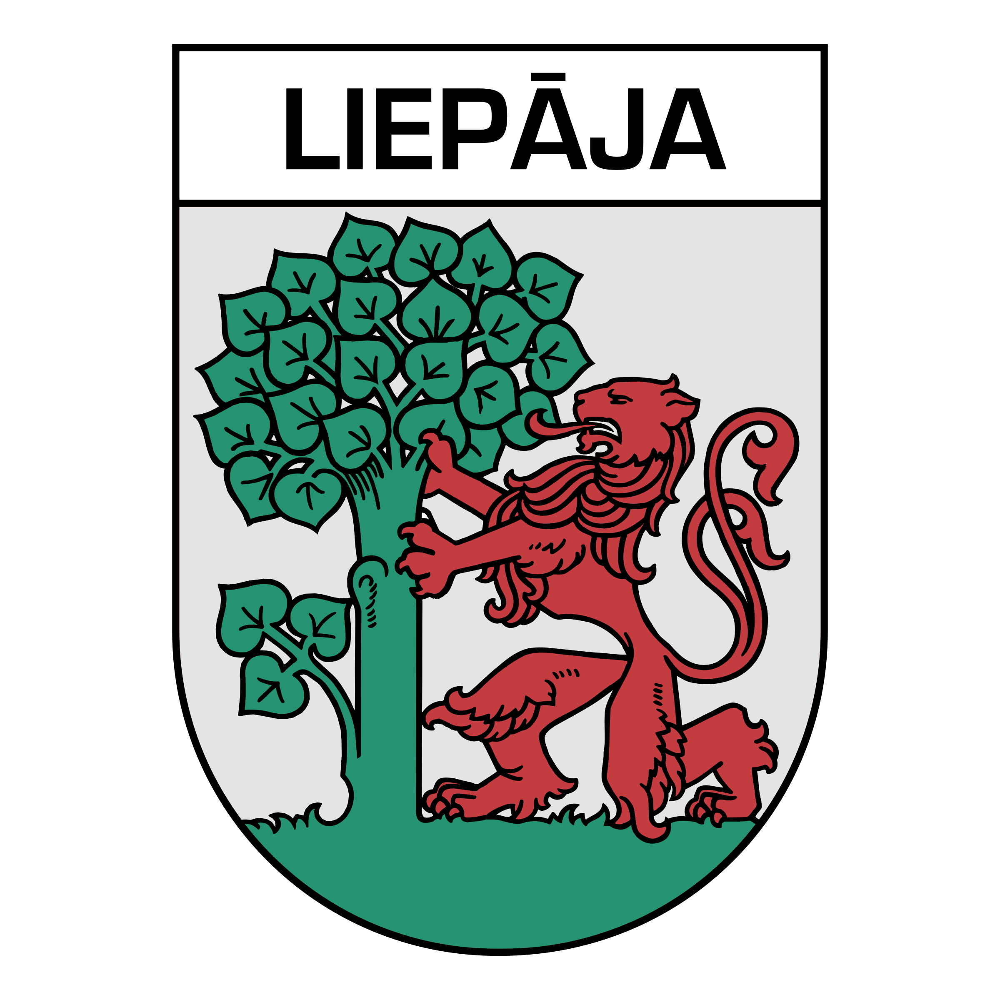

|  Liepāja (pronounced [liepaːja] i; Livonian: Līepõ; Russian: Лиепая; German: Libau; Yiddish: ליבאווע Libave) is a state city in western Latvia, located on the Baltic Sea. It is the largest city in the Kurzeme Region and the third-largest city in the country after Riga and Daugavpils. It is an important ice-free port.
In the 19th and early 20th century, it was a favourite place for sea-bathers and travellers, with the town boasting a fine park, many pretty gardens and a theatre.Liepāja is however known throughout Latvia as "City where the wind is born", likely because of the constant sea breeze. A song of the same name (Latvian: "Pilsētā, kurā piedzimst vējš") was composed by Imants Kalniņš and has become the anthem of the city. Its reputation as the windiest city in Latvia was strengthened with the construction of the largest wind farm in the nation (33 Enercon wind turbines) nearby.
One of the very few surviving films documenting the mass murder of Jews during the first stages of the Holocaust is a short film by a German soldier who witnessed the massacres of Liepāja Jews in July 1941 near the city's lighthouse.
Liepāja is chosen as the European Capital of Culture in 2027. |